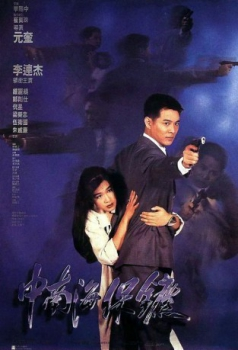
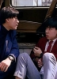

Also known as:The Defender (original title)
Country:Hong Kong, 92 minutes
Spoken languages:English, Mandarin, Cantonese
Genres:Action, Crime, Thriller
Director(s):Corey Yuen
Writer(s):Gordon Chan, Kin Chung Chan
Video Codec:Unknown
Number: 287


Certification:R
Storyline:
A corrupt businessman commits a murder and the only witness is the girlfriend of another businessman with close connections to the Chinese government, so a bodyguard from Beijing is dispatched to help two Hong Kong cops protect th...
Cast: 
Medium: Original DVD,
Comments: Part of: Jet Fighter Jet Li 4 Film Set
Loaned: No
Aspect ratio: Unknown